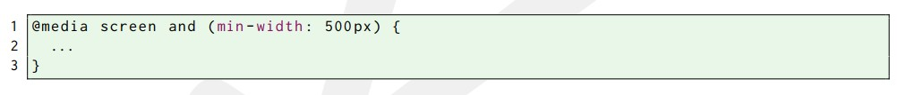

No momento em que definimos as regras CSS dos nossos documentos, também podemos determinar para quais tipos de mídia essas regras serão válidas, ou seja, podemos decidir quais regras serão aplicadas quando o documento for apresentado em uma tela, no papel ou narrado por um sintetizador de voz, por exemplo. Podemos informar o tipo de mídia de duas formas: com o atributo media do elemento link ou com a regra media do CSS.
A linguagem CSS define os seguintes tipos de mídia:
| Media Type | Descrição |
| all | Todos os tipos de mídia. |
| braille | Dispositivos em braille com respostas a toques |
| embossed | Impressoras em braille. |
| handheld | Dispositivos portáetis (exceto smartphones mais modernos). |
| Impressoras convencionais. | |
| projection | Projetores. |
| screen | Tela de computadores, smartphones ou algum dispositivo do gênero. |
| speech | Sintetizadores de voz. |
| tty | Dispositivos de grades com caracteres de tamanho fixo (teletypes, terminal ou dispositivos com limitações de exibição). |
| tv | Televisores. |
Podemos definir as mesmas regras CSS para diversos tipos de mídia. Para isso devemos separar esses tipos por vírgula.
Algumas propriedades não são aplicáveis a determinados tipos de
mídia. Por exemplo, a propriedade width não pode ser aplicada à
mídia speech. Por outro lado, algumas propriedades podem
ser aplicadas à diversas mídias. Por exemplo, a propriedade
position pode ser aplicada às mídias screen, projection,
handheld, print, tty e tv.
Para identificar, mais facilmente, quais propriedades podem ser
aplicadas a um determinado tipo de mídia, a especificação da
linguagem CSS divide em grupos os diversos tipos de mídia.
Confira na tabela a seguir a relação entre os tipos de mídia e os
grupos de mídia:
| Media Type | Media Groups | |||
|---|---|---|---|---|
| continuous e paged | visual, audio, speech e tactile | grid e bitmap | interactive e static | |
| braile | continuous | tactile | grid | ambos |
| embossed | paged | tactile | grid | static |
| handheld | ambos | visual, audio, speech | ambos | ambos |
| projection | paged | visual | bitmap | interactive |
| screen | continuous | visual, audio | bitmap | ambos |
| speech | continuous | speech | nenhum | ambos |
| tty | continuous | visual | grid | ambos |
| tv | ambos | visual, audio | bitmap | ambos |
Os tipos de mídia do CSS permitem definir diferentes regras para cada tipo de mídia. Entretanto, eventualmente é necessário definir regras CSS de acordo com características mais específicas dos dispositivo de saída. Para isso, devemos utilizar as chamadas media queries. Veja o seguinte exemplo.
No exemplo acima, as regras CSS serão aplicadas caso o tipo de mídia utilizado seja screen e a área de renderização do documento (viewport) tenha, no mínimo, 500 pixels de largura. Como vimos as media queries também podem ser definidas através do atributo media do elemento link.
No exemplo abaixo, o código dentro da regra media será aplicado quando a largura do viewport for pelo menos 500 pixels ou quando a orientação for portrait.
Eventualmente, uma media query pode não fazer sentido. Considere o seguinte exemplo:

No exemplo acima, a media query é contraditória, pois o tipo de
mídia speech não é compatível com a propriedade
min-width. Dessa forma, o código CSS definido dentro da
regra media nunca será processado.
Veja a seguir algumas propriedades que podemos utilizar nas media
queries
| Propriedade | Descrição | Valor | Media Type | min e max? |
| width | Determina qual deve ser a largura do viewport no dispositivo de saída | Medidas | visual e tactile | sim |
| height | Determina qual deve ser a altura do viewport no dispositivo de saída. | Medidas | visual e tactile | sim |
| device-width | Determina qual deve ser a largura da tela do dispositivo de saída. | Medidas | visual e tactile | sim |
| device-height | Determina qual deve ser a altura da tela do dispositivo de saída. | Medidas | visual e tactile | sim |
| orientation | Verifica se o viewport está na orientação portrait (retrato) ou landscape (paisagem). | portrait ou landscape | bitmap | não |
| aspect-radio | Determina a razão entre as propriedades width e height. | inteiro/inteiro | bitmap | sim |
| color-index | Determina o número de cores do dispositivo de saída. | inteiro | visual | sim |
| resolution | Determina a resolução do dispositivo de saída. | dpi | bitmap | sim |